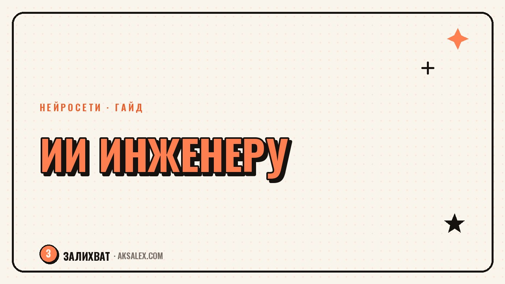

Нейросети для инженера: САПР, расчёты и документация

Инженерная работа наполовину состоит из проектирования, а наполовину - из документации, пояснительных записок и переписки с подрядчиками. Нейросети пока не умеют считать за инженера ответственные расчёты, но заметно ускоряют вторую половину работы. Разберём, где именно ИИ уже полезен в связке с САПР и инженерной документацией, а где к его выводам нужно относиться с осторожностью.
Какие инженерные задачи нейросеть закрывает уже сегодня
Нейросети сильны там, где нужно быстро превратить набор данных или черновых мыслей в связный текст: пояснительная записка, техническое задание, письмо подрядчику. Они также хорошо помогают разбираться в чужом коде для САПР-скриптов и объяснять, что делает конкретная формула или макрос.
А вот сам инженерный расчёт - нагрузки, допуски, прочность - нейросеть выдаёт как черновую прикидку, а не как готовое проверенное значение. Ответственность за цифры, которые пойдут в проект, всегда остаётся на инженере, который эти цифры проверил вручную или в профильном ПО.
Три задачи, где экономия времени заметна сразу
- Черновик пояснительной записки по готовым исходным данным
- Разбор и объяснение непонятного скрипта или макроса в САПР
- Структурирование технического задания из разрозненных заметок
Работа с документацией: от ТЗ до пояснительной записки
Документация в инженерной работе часто пишется в последнюю очередь и наспех, потому что вся энергия уходит на сам проект. Нейросеть здесь работает как редактор и сборщик черновика: ты закидываешь ей исходные тезисы, параметры и расчётные данные, а она собирает из этого связный текст по структуре записки или отчёта.
Как выстроить процесс по шагам
- Собери исходные данные и тезисы: параметры, ограничения, результаты расчётов
- Попроси нейросеть собрать из тезисов черновик по структуре твоего отчёта
- Проверь каждую цифру и формулировку по своим исходным данным
- Дооформи документ под стандарт предприятия и подпиши
Раньше пояснительная записка отнимала полдня в конце проекта, когда уже нет сил на текст. Сейчас черновик готов за час, и остаётся время нормально его вычитать, а не сдавать в последнюю ночь.
Нейросеть и САПР: помощник, а не автопилот проектирования
Прямого доступа к геометрии модели у обычного текстового чат-бота нет, но он полезен вокруг САПР: объясняет логику скрипта автоматизации, помогает написать формулу для параметрической модели или найти ошибку в макросе, если скинуть ему код и описание проблемы.
Отдельно стоят специализированные модули с генеративным проектированием внутри профильного ПО - они уже встроены в некоторые системы и предлагают варианты геометрии под заданные ограничения. Но и там финальный выбор варианта и проверку на соответствие нормам делает инженер, а не алгоритм.
- Объяснение логики чужого скрипта или макроса перед тем как его менять
- Помощь в написании формулы для параметрической модели
- Поиск вероятной причины ошибки по описанию и логам
Где нужен особый контроль: расчёты, нормы и безопасность
Главная опасность в инженерной работе - уверенно звучащая ошибка. Нейросеть может выдать формулу с неверным коэффициентом или сослаться на несуществующий пункт норматива, и по тону это будет неотличимо от правильного ответа. Поэтому любые цифры, которые пойдут в расчёт нагрузки, прочности или безопасности, нужно перепроверять в профильном ПО или вручную, а не копировать из чата.
Второй момент - актуальность нормативной базы. Нейросеть обучена на данных до определённой даты и может не знать о свежих изменениях в СП или ГОСТ. Для любой ссылки на норматив стоит сверяться с действующей редакцией документа напрямую, а не полагаться на память модели.
Что можно доверить нейросети, а что нет
| Задача | Можно доверить нейросети | Остаётся за инженером |
|---|---|---|
| Черновик пояснительной записки | Да, как основа текста | Проверка цифр и терминов |
| Объяснение чужого скрипта | Да, для понимания логики | Решение вносить правки |
| Черновая прикидка расчёта | Да, для первой оценки | Финальный проверенный расчёт |
| Ссылка на норматив или ГОСТ | Нет, без сверки | Проверка по действующей редакции |
| Утверждение проектного решения | Нет | Полностью решение инженера |
С чего начать: пошаговый план на первый месяц
Не стоит сразу тащить нейросеть в расчётную часть проекта. Разумнее начать с документации и переписки - там ошибка нейросети заметна сразу при вычитке и не уходит дальше в проект.
Практический план
- Неделя 1: отдай нейросети только сборку черновика документации по готовым тезисам
- Неделя 2: попробуй разбор скриптов и макросов на реальных рабочих задачах
- Неделя 3: сравни время на документацию до и после - оцени честную экономию
- Неделя 4: реши, какие задачи оставить нейросети, а какие невыгодны из-за проверки
Такой постепенный подход показывает реальную картину: где нейросеть снимает рутину, а где она добавляет работы по перепроверке собственных ошибок.
Частые вопросы
Может ли нейросеть заменить инженерный расчёт?
Нет, она может дать только черновую прикидку для первичной оценки. Финальный расчёт, проверку допусков и норм всегда делает инженер в профильном ПО или вручную, и на нём остаётся ответственность за результат.
Можно ли доверять нейросети ссылки на ГОСТ и СП?
Только после сверки с действующей редакцией документа напрямую. Нейросеть обучена на данных до определённой даты и может не знать о недавних изменениях норматива.
Помогает ли нейросеть в работе с САПР?
Прямого доступа к геометрии модели у обычного чат-бота нет, но он полезен для объяснения скриптов, макросов и формул параметрических моделей, если скинуть ему код и описание задачи.
С какой задачи лучше начать внедрение нейросети инженеру?
С документации: пояснительных записок, технических заданий и переписки с подрядчиками. Ошибка там заметна сразу при вычитке и не уходит дальше в расчётную часть проекта.
Безопасно ли загружать данные проекта в нейросеть?
Зависит от условий сервиса и требований к конфиденциальности проекта. Для чувствительных данных стоит смотреть на сервисы с понятной политикой хранения, а не на любой бесплатный публичный чат-бот.
Раз тема оказалась полезной, вот что почитать следующим. Что нейросети реально умеют в работе врача, а что пока остаётся только за человеком.
Читать статью →а не вручную